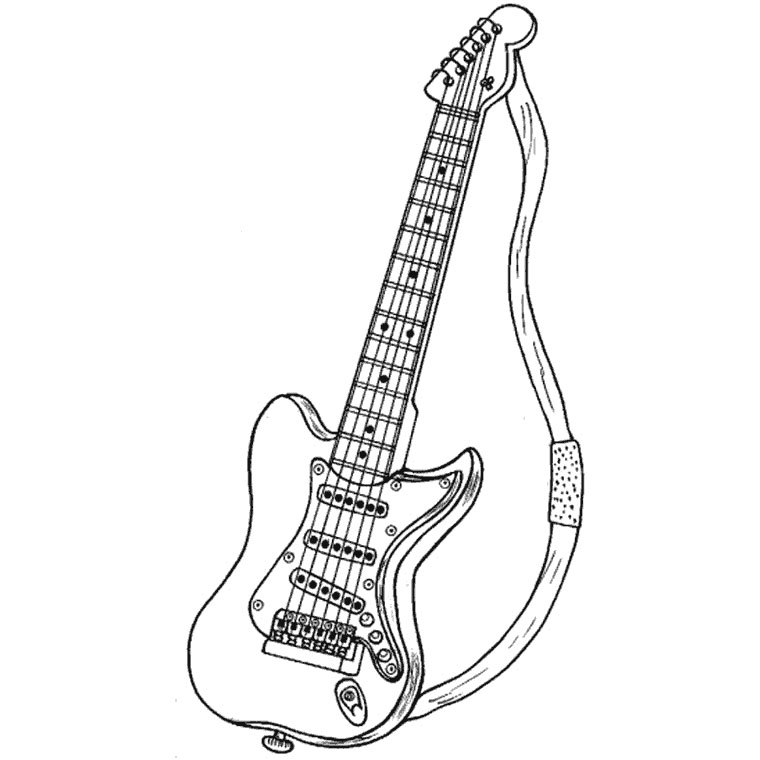
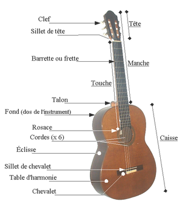
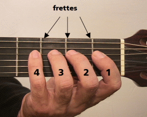
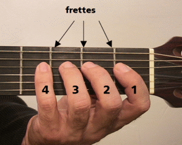
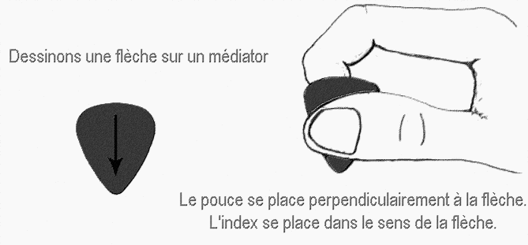
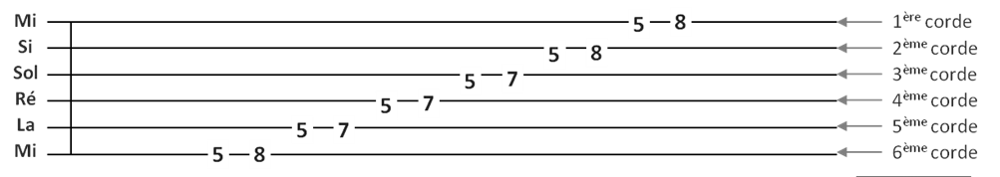
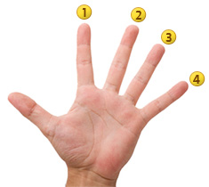
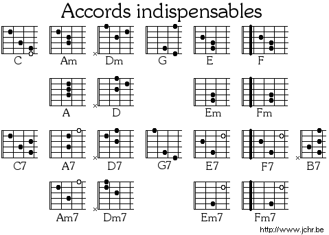
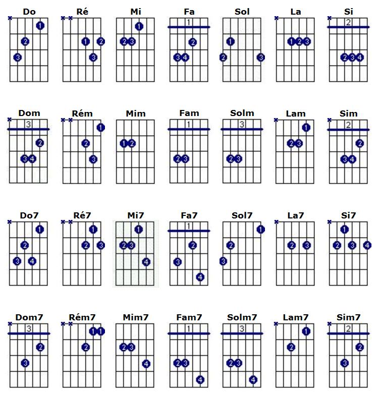

COURS GUITARE
Leçon 1: Posture
En amont il est préférable avant de commencer l'apprentissage de connaître son insruments :

En ce qui concerne le maintien celui-ci permet d'éviter toutes douleurs et ou déformation au dos et/ou aux mains. Comme on le répète souvent mais faut croire que pas assez, le dos doit être droit et les pieds à plat au sol pour un meilleur maintien de la guitare. Maintenant pour ce qui l'en est de la position des doigts sur le manche la position ideal est celle ci-dessous, l'importance étant de ne pas trop plié le poignet (ne pas qu'il soit "cassé").
 

À présent vient le tour du médiator, et bien oui en effet cette petite chose qui ne sert qu'à "faire gratte-gratte" se doit d'être bien tenu si vous voulez pouvoir jouer de la meilleur façon qui soit :
Leçon 2: Solfège
La tablature se lit de gauche à droite, voici donc un exemple de tablature accompagnée de la façon dont-on doit la lire:
 En premier, on peut lire : 5 sur la 6ème corde (Mi grave), cela veut dire qu’il faut jouer la 5ème frette sur la 6ème corde.
Ensuite, on lit : 8 sur la 6ème corde (Mi grave), cela veut dire qu’il faut jouer la 8ème frette sur la 6ème corde.
Et ainsi de suite : 5ème frette sur la 5ème corde puis 7ème frette sur la 5ème corde puis 5ème frette sur la 4ème corde, …
Il faut jouer les notes dans l’ordre où elles sont écrites sur la tablature, c’est à dire l’une après l’autre. Toutefois si deux ou plusieurs notes sont sur la même ligne (verticale), tu dois les jouer en même temps.
Passons maintenant au point indispensables de la pratique: Comment lire un accord !
 1 = L’index
2 = Le majeur
3 = Annulaire
4 = Auriculaire
0 = Jouer la corde ouverte (sans appuyer dessus)
X = Ne pas jouer la corde
Leçon 3: Accords
Vient à présent le moment d'apprendre les accords (ils en existe à ma connaissance une bonne infinité...Mais nous nous attarderons ici aux indispensables!), ces derniers tant appréciés pour pouvoir jouer en quelques minutes les morceaux de musique Pop-rock, rock, soul,... souhaiter. Il suffit d'écouter le morceaux et de trouver la sonorité qui convient. La plupart des morceaux étant à base de 3 voir 4 accords principaux, largement suffisant pour jouer le morceaux tant espérer (cette manière permet surtout de travailler son oreille musical et donc de la développer ). Ou bien vous pouvez vous contentez de trouver les accords sur internet, voici quelques sites utiles : tabs.ultimate-guitar ; tabs4acoustic ; Ultimate tabs ; ou encore à l'aide d'applications => Guitar chords and tabs.  
Leçon 4: Tablatures débutants
Pour la tablature, c'est par ici ! => Ed Sheeran: The a team
Pour la tablature, c'est par ici ! => Ed Sheeran: Give me love
Pour la tablature, c'est par ici ! => Vance Joy: Riptide
Pour la tablature, c'est par ici ! => Colbie Caillat: Try